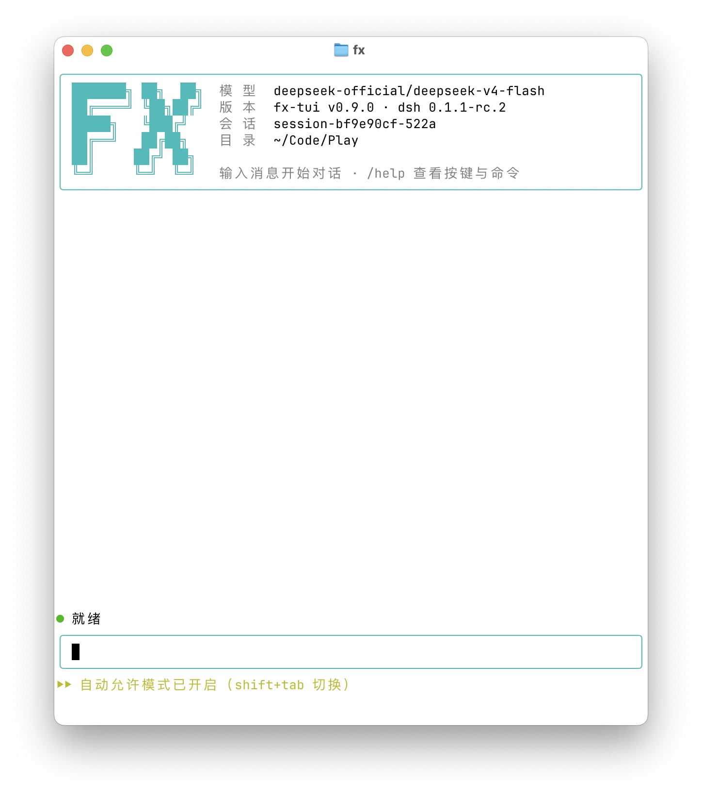

01
起
fx 启动：横幅钉在顶缘、输入框钉在最后一行，中间空白是弹性的；会话不满一屏也不滚动。
fx-tui 是 DeepSeek Harness 的终端界面。一个 fx 命令，接着你正在用的 shell、项目目录和快捷键——模型就在你敲命令的地方读代码、跑测试、改文件。
! 命令直通，输出自动进上下文
退出净屏，fx --resume 续上
parse() 的边界判断：空字符串没被当成合法输入。已经把 src/shell-bang.ts 的空值分支补上，再跑一遍？编码 agent 的回答已经够长，但你真正要跑的命令、要看的报错、要确认的权限，全在终端里。把两边接起来，比多开一个窗口更省事。
! 跑完，输出自动跟着下一条消息进上下文Ctrl+O 才展开全文fx --resume <id> 原样续上fx，四步都发生在同一个终端里：没有切换，没有复制粘贴，也没有「刚才那步」的回忆成本。
fx 启动：横幅钉在顶缘、输入框钉在最后一行，中间空白是弹性的；会话不满一屏也不滚动。
多行输入、@ 引用工作区文件、/ 唤命令与技能、从 Finder 拖图或 Ctrl+V 贴截图。
工具调用是一行卡，审批按 y/s/a/n；跑到一半想改方向，Enter 注入当前轮、Tab 排队下一轮。
/export 导出 Markdown 时间线；退出时清屏并打印恢复提示，明天 fx --resume 接着聊。
输入 !npm test，命令在你自己的 shell 里执行，不经过模型、也不触发回复。输出自动暂存进输入框上方的托盘，随你下一条消息进入上下文——所以你只要打「怎么修」，它已经看过报错了。
! 是本地 shell；退出码、耗时、输出头尾原样成卡，!! 只给你自己看。⌫ 撤销最后一条、⌥⌫ 清空。审批卡片就长在命令下面：y 允许一次、s 本会话不再问、a 总是允许、n 拒绝。选过的同类动作按语义签名记住——bash 按命令原文、文件工具按路径，a 才写进本地 allowlist。
/config permission ask 写进启动默认，或 Shift+Tab 只切当前会话。$DSH_HOME/fx-tui-allowlist.json，删掉即清空全部「总是」授权。命令卡默认一行：命令截断、耗时、退出码、输出行数都在，完整命令与全文收进 Ctrl+O 面板。思考默认一行摘要，Ctrl+T 实时尾随、定稿内联、空闲时把上一步全文打成面板。
Ctrl+O 工具详情、Ctrl+T 思考、Ctrl+R 注入的隐藏上下文。不是功能清单，是三个月后你还会按的那几个键。
/btw 侧问复用当前上下文做一次无工具单轮提问：不写会话历史、不计 token、不打断正在跑的回合，答案以面板呈现。
/theme 主题内置浅/深，外带 14 款 Ghostty 热门主题；启动时探测终端背景色自动选深浅，界面 chrome 始终是品牌 teal。
/update 自我升级在 TUI 里完成 fetch → 快进合并 → 装依赖 → 重建；脏工作区先拦，只快进、不产生 merge 提交。
还有 /sessions 活体切换会话、/doctor 逐项环境自检、/context 上下文明细、/image 附加图片，以及 @ 文件补全和技能菜单——都在 /help 里。
fx-tui 没有自己的窗口，也不接管你的终端配置：主屏保留 scrollback，历史可搜索、可复制，退出时再把屏幕擦干净。

fx 了。只支持 macOS，需要 Node.js 与 dsh CLI。装完第一次启动会看到横幅与「自动允许」模式提示——那是默认值，不是唯一选择。
Node.js ≥ 24.9.0、pnpm，以及 dsh CLI 本体（0.2.2-rc.1 或更高）——没有它 fx 无法启动。DeepSeek API key 写进 ~/.dsh/.credentials.yaml。
node -v && pnpm -v && dsh --version
把这句话复制给 Claude Code、ZCode 等编码 agent，它会读安装指南、装好并验证。
请读取 https://raw.githubusercontent.com/xianglifei/dsh-tui-fx/main/docs/install.md，严格按其中的步骤帮我把 fx-tui 完整装好并验证可用；任何一步失败就停下，把错误原文完整告诉我，不要自行猜测或跳过。
以下每一条都能在 README、安装指南或代码里找到出处。装之前先看清楚，比装完再踩坑省时间。
开发和验证都在 macOS 上完成。Windows 适配调研过但暂缓，暂时请用 dsh 自带的 Web UI。
必须先有 dsh CLI 运行时和 DeepSeek API key。peer 依赖精确锁在 dsh 的 0.2.2-rc.1；版本对不上时 dsh 会打印一行 warning 并跳过整个 bundle——fx 进去没有界面，升级 dsh 时请同步升级 fx-tui。
装完工具调用不逐个询问。请自己判断：Shift+Tab 切到逐次确认，或 /config permission ask 写进默认。
它是终端界面：图片可以输入给模型，但不在终端里渲染预览；文档、表格也没有可视化视图。
后台更新只在启动约两分钟后检查、每 24 小时最多联网一次；新版本落盘后，当前进程仍是旧代码。
「总是允许」是本地 JSON，按命令原文/路径匹配，不区分项目、不加密；删文件即清空，别把它当权限系统。